July 25th - 27th, 2016
This project was an experiment in adding haptic feedback to holographic experiences. HoloInOne showcases the use of wearables as inertial movement units and as enhancers for immersive holographic experiences. We combine the Band's IMU capabilities, specifically the accelerometer, with the HoloLens, so users can interact with a virtual mini golf course and hit the ball by swinging their arm.The acceleration data collected from the swings are translated to vibrations that tell the user they hit the golf ball. We also use the HoloLens' environment mapping capabilities to lay out a mini-golf course to mesh the real and virtual worlds together. Check out the GitHub repository to see our open source code.
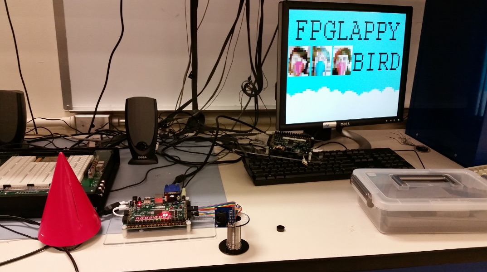
Fall 2015
FPGLAPPY BIRD was our take on the popular mobile/web-based game "Flappy Bird". We implemented the game on an FPGA (Nexys 4 DDR) and made the game more interesting and difficult by incorporating a vision-tracking element that required the player to jump in order to control the on-screen bird protagonist. Specifically, the vision-tracking component looked for a bright object placed over the player's face (a "beak" in the form of a brightly colored paper party hat), and then usex the coordinates of this said object as input for the player coordinates to the game. A large change in the player's vertical position, as monitored by the vision-tracking component, triggered a hop for the player's on-screen character. By incorporating this vision-tracking specific control screen, player's movements were continually tracked, resulting in greater emphasis on the player's attention and engagement within the game. For the final touch, we layered the player's face onto the bird sprite, allowing for a truly personalized experience. Check out the GitHub repository to see our open source code.
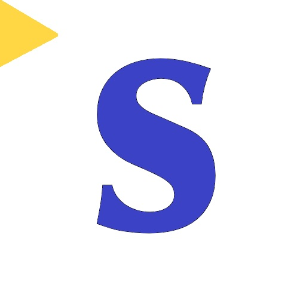
June 19th - June 20th, 2015
Approximately 1,000,000 people in the United States over the age of 5 are functionally deaf. Imagine having an application that could augment their reality, giving them the ability to attend talks and tours without a supplemental guide book. This assistive application for the SamsungVR, Subit, provides realtime captioning for your life. Upon running the application, the wearer can simply tap the touch pad to start the voice recognition process. Following that, captions will appear beneath the camera feed viewing area. This application uses the Android Native SDK, Google Voice Recognition and Oculus Mobile for the Samsung GearVR. Check out the GitHub repository to see our open source code.
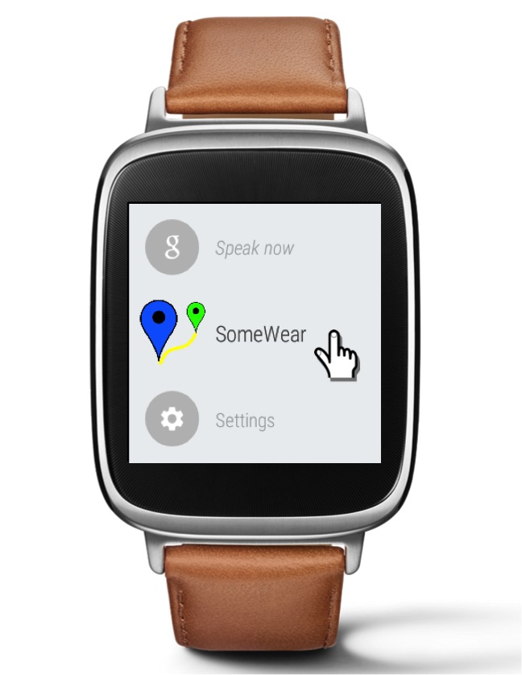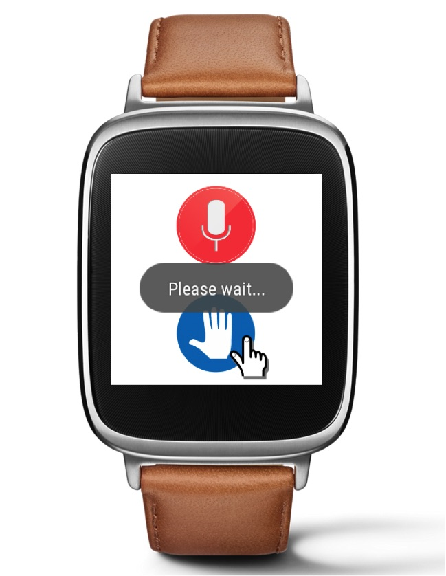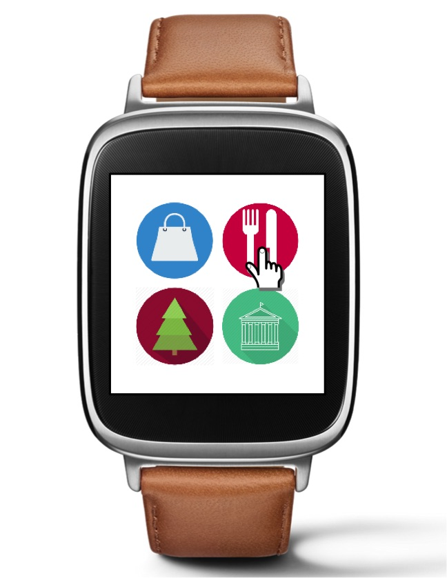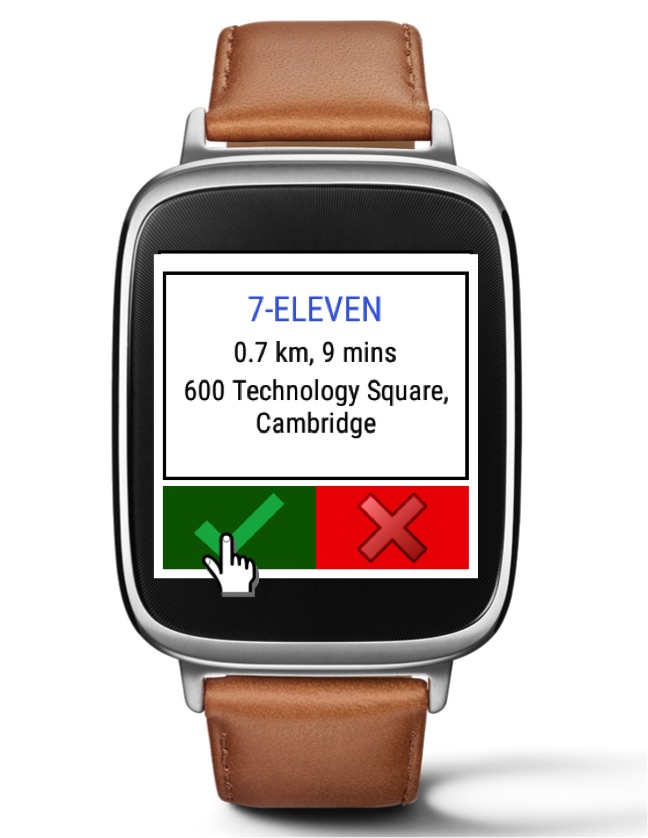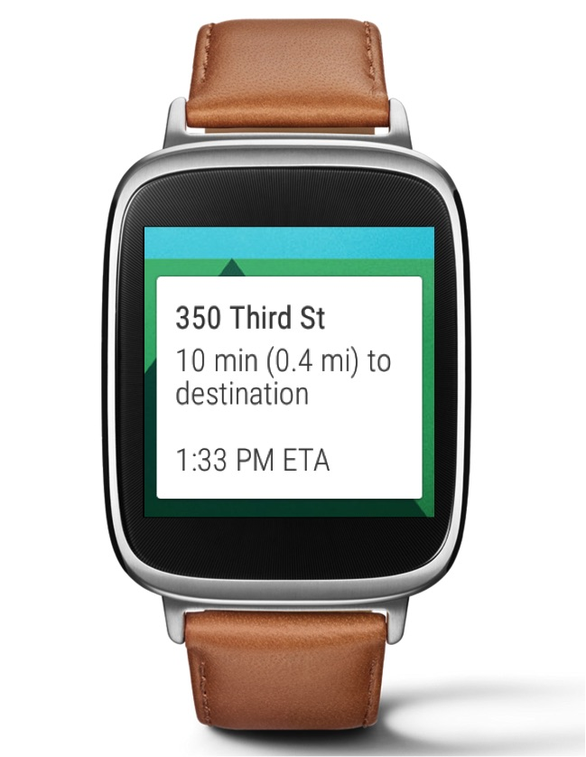
Feb 2015 - May 2015
SomeWear is a revolutionary smart watch application that capitalizes on a user's need for instant gratification. It aims to provide real time, specific destination for a user catered to their preferences. Using several Google APIs, SomeWear quickly finds interesting places to go and automatically plans out a walkable route from the user's location. This application ensures that users are never directionless, always having "somewear" to go.
Jan 2015 - May 2015
To better integrate intelligent machines in our daily lives, social awareness must be emphasized when developing behavioral algorithms for robots. My work involved creating a multifunction Windows Presentation Foundation (WPF) application that collects and sends sensory data from the Kinect 2.0 sensor to a robot. I also used Robot Operating System (ROS), to parse sensory inputs and coordinate data flow between the WPF application tied to the Kinect sensor and AIDA, a robot used as a testbed for the demo. I also designed and implemented behavioral algorithms for an interactive human-robot demo using the Kinect 2.0 and AIDA for sponsors of the MIT Media Lab.
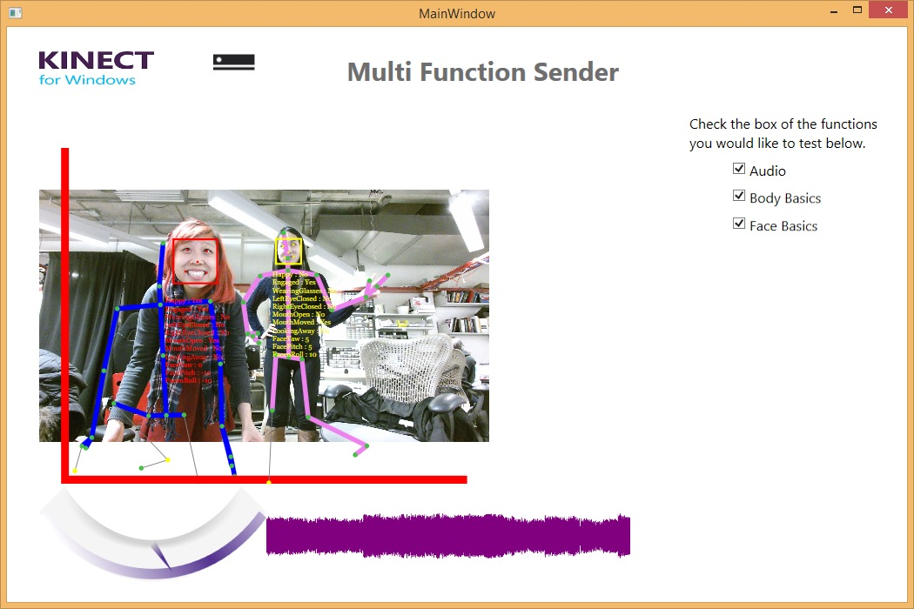
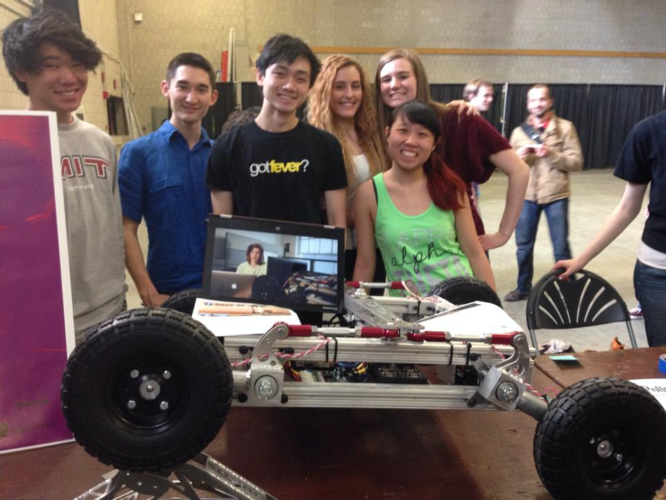
Jan 2014 - May 2014
NASA's RASC-AL RoboOps is an engineering competition sponsored by NASA and organized by the National Institute of Aerospace where teams of undergraduate and graduate students are invited to create a multi-disciplinary team to build a planetary rover prototype and demonstrate its capabilities at the NASA Johnson Space Center. All participating teams are required to design and build a physical rover, submit a technical report, and do a live demonstration of the rover's functionalities.
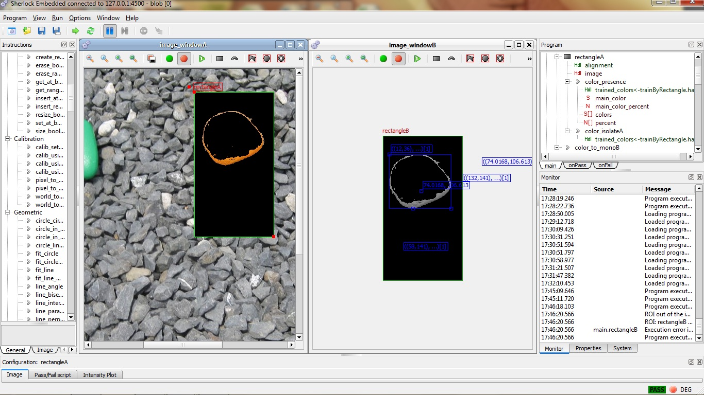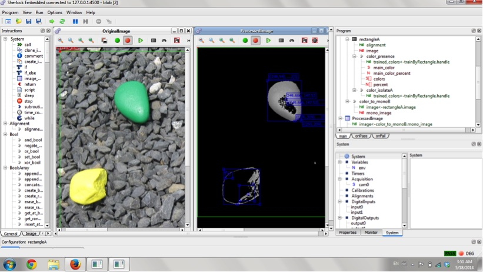
As Vision System Lead in 2014, I developed image processing algorithms using Teledyne Dalsa's Sherlock program for the BOA PRO camera to identify colored rocks in a mock planetary environment at NASA Johnson Space Center. Images were processed using a combination of filters and blob detection techniques to identify potential areas of interest. In the scope of this competition, various colored rocks and plastic toy "martians" were the target objects the robot needed to collect. The team placed second in the competition. A copy of our final technical report can be found below.